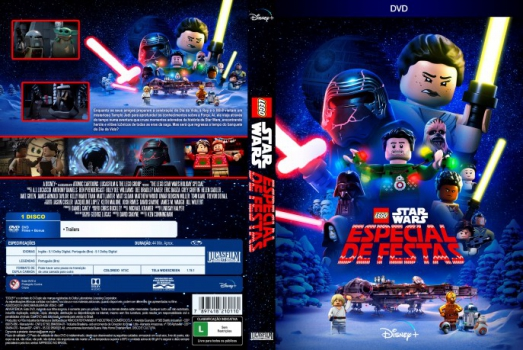

Sequestro (2009)



País:Brazil, 94 minutos
Idiomas falados:Português
Gênero(s):
Diretor(s):Jorge W. Atalla
Escritor(es):Jorge W. Atalla, Caio Cavechini
Codec:MPEG-2 (DVD)
Número: 5005
Tomatometer Score:

0%

0%
Avaliação (TMDb):


6.0/10 (1 votos)
Avaliação (Usuário):
Certificado:
Sinopse:
Mergulhe no mundo cru da epidemia de seqüestro em São Paulo, seguindo uma equipe policial por 4 anos. Com acesso sem precedentes, Sequestro é uma intensa viagem com a polícia, localizando casas com reféns, espionando chamadas, liberando raptos petrificados e prendendo os sequestradores.
Elenco:
Tipo de mídia: DVD R/RW,
Legendas: Inglês, Português, Sem Legendas
Alugado: Não
Tela: Anamorphic Widescreen